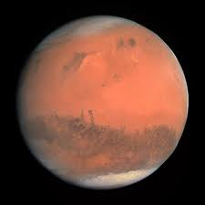

PLANETS
Mercury
Mercury is the first planet from the Sun and the smallest in the Solar System. It is a terrestrial planet with a heavily cratered surface due to overlapping impact events.
Venus
Venus is the second planet from the Sun. It is a rocky planet with the densest atmosphere of all the rocky bodies in the Solar System
Earth
Earth is the third planet from the Sun and the only astronomical object known to harbor life. The only one in the Solar System sustaining liquid surface water.

Mars
Mars is the fourth planet from the Sun. The surface of Mars is orange-red because it is covered in iron(III) oxide dust, giving it the nickname "the Red Planet".
Jupiter
Jupiter is the fifth planet from the Sun and the largest in the Solar System. It is a gas giant with a mass more than two and a half times that of all the other planets in the Solar System combined
Saturn
Saturn is the sixth planet from the Sun and the second-largest in the Solar System, after Jupiter. It is a gas giant with an average radius of about nine-and-a-half times that of Earth.
Uranus
Uranus is one of two ice giants in the outer solar system (the other is Neptune). Most (80% or more) of the planet's mass is made up of a hot dense fluid of "icy" materials – water
Neptune
Neptune is the eighth and farthest planet from the Sun. It is the fourth-largest planet in the Solar System by diameter, the third-most-massive planet, and the densest giant planet.